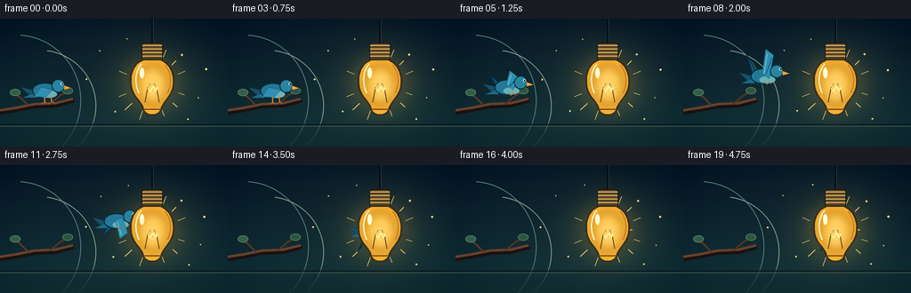
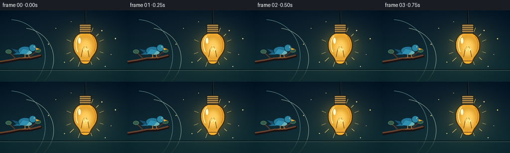
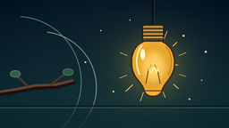
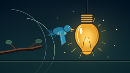

CODING AGENTS AS PIXEL WORLD MODELS
traex/GPT-5.6-Sol · dynamic_spatial_relationship_0041
点击播放 · 原生 RGB 像素
逐轮保存的候选
回放视频、检查图与代码变化。
每份候选均可单独播放。实际图片检查记录在下方工具轨迹中。
候选 01播放与检查图
点击播放 · 原生 RGB 像素


展开代码变化
--- 上一保存版本
+++ 本次保存版本
@@ -0,0 +1,234 @@
+from pathlib import Path
+import math
+import numpy as np
+from PIL import Image, ImageDraw, ImageFilter
+import artifact_io
+
+W, H, N = 256, 144, 20
+S = 4
+WS, HS = W*S, H*S
+ROOT = Path(__file__).resolve().parent
+
+
+def sc(v):
+ return int(round(v*S))
+
+
+def box(x0,y0,x1,y1):
+ return (sc(x0),sc(y0),sc(x1),sc(y1))
+
+
+def pts(seq):
+ return [(sc(x),sc(y)) for x,y in seq]
+
+
+def smoothstep(x):
+ x = max(0.0, min(1.0, x))
+ return x*x*(3-2*x)
+
+
+def cubic(p0,p1,p2,p3,n=18):
+ out=[]
+ for k in range(n):
+ t=k/(n-1); u=1-t
+ out.append((u**3*p0[0]+3*u*u*t*p1[0]+3*u*t*t*p2[0]+t**3*p3[0],
+ u**3*p0[1]+3*u*u*t*p1[1]+3*u*t*t*p2[1]+t**3*p3[1]))
+ return out
+
+
+def make_background(i):
+ yy, xx = np.mgrid[0:HS,0:WS].astype(np.float32)
+ x = xx/S; y = yy/S
+ # Deep teal evening wall, warmed by the lamp.
+ top=np.array([8,25,39],np.float32); bot=np.array([20,52,57],np.float32)
+ q=(y/H)[:,:,None]
+ arr=top*(1-q)+bot*q
+ # warm pool around the bulb
+ pulse=0.97+0.025*math.sin(i*0.42)
+ r=np.sqrt(((x-171)/71)**2+((y-72)/62)**2)
+ g=np.exp(-2.15*r*r)*pulse
+ arr += g[:,:,None]*np.array([35,29,10],np.float32)
+ # subtle vignette
+ rv=((x-W/2)/(W*.72))**2+((y-H/2)/(H*.88))**2
+ arr -= np.maximum(rv-.18,0)[:,:,None]*np.array([13,14,12],np.float32)
+ return Image.fromarray(np.uint8(np.clip(arr,0,255)),'RGB').convert('RGBA')
+
+
+def draw_background_details(im, i):
+ d=ImageDraw.Draw(im,'RGBA')
+ # Quiet wall panel arcs and lower molding establish depth without clutter.
+ d.arc(box(-55,18,91,166), 274, 86, fill=(81,125,120,30), width=sc(1))
+ d.arc(box(-20,35,108,161), 278, 87, fill=(126,156,137,18), width=sc(1))
+ d.line(pts([(0,119),(256,119)]), fill=(6,21,29,90), width=sc(1))
+ d.line(pts([(0,121),(256,121)]), fill=(83,112,101,25), width=sc(1))
+ # deterministic floating dust motes in the light
+ motes=[(112,35),(128,104),(205,41),(224,90),(96,69),(231,57),(144,22),(211,112)]
+ for j,(mx,my) in enumerate(motes):
+ dx=1.5*math.sin(i*.17+j*1.8); dy=1.1*math.cos(i*.13+j*.9)
+ rr=0.65+(j%3)*.25
+ d.ellipse(box(mx+dx-rr,my+dy-rr,mx+dx+rr,my+dy+rr),fill=(255,224,139,35+j%2*18))
+
+
+def draw_branch(im):
+ d=ImageDraw.Draw(im,'RGBA')
+ # Branch remains as a visual origin, behind the bird.
+ d.line(pts([(0,105),(18,102),(38,98),(62,97),(83,91)]), fill=(25,17,18,245), width=sc(6))
+ d.line(pts([(0,103),(19,100),(39,96),(62,95),(82,90)]), fill=(103,65,43,255), width=sc(3))
+ d.line(pts([(32,98),(22,88),(14,84)]), fill=(88,55,38,220), width=sc(2))
+ d.line(pts([(56,96),(68,86),(76,82)]), fill=(83,51,35,220), width=sc(2))
+ # a few restrained leaves
+ d.ellipse(box(11,79,23,87), fill=(52,92,74,230), outline=(81,124,91,180), width=sc(1))
+ d.ellipse(box(70,77,82,85), fill=(44,84,67,220), outline=(76,119,87,170), width=sc(1))
+
+
+def draw_bird(im, cx, cy, frame, flying):
+ d=ImageDraw.Draw(im,'RGBA')
+ if flying:
+ phase=math.sin(2*math.pi*(frame-3)/4.1)
+ lift=17+13*abs(phase)
+ up = phase >= 0
+ # far wing: cooler and darker, silhouette remains legible against glow
+ if up:
+ far=[(cx-6,cy-1),(cx-20,cy-lift+5),(cx-12,cy+2),(cx+2,cy+6)]
+ near=[(cx-2,cy-2),(cx+2,cy-lift),(cx+11,cy-lift+7),(cx+6,cy+4)]
+ else:
+ far=[(cx-7,cy),(cx-17,cy+lift-3),(cx-7,cy+10),(cx+2,cy+3)]
+ near=[(cx-2,cy),(cx+3,cy+lift),(cx+12,cy+lift-7),(cx+6,cy-3)]
+ d.polygon(pts(far), fill=(20,79,111,255), outline=(8,45,69,255))
+ d.line(pts(far+[far[0]]), fill=(7,40,59,220), width=sc(1))
+ else:
+ phase=0
+ near=[(cx-5,cy-3),(cx-13,cy+8),(cx+1,cy+8),(cx+8,cy)]
+
+ # layered tail feathers pointing left
+ d.polygon(pts([(cx-11,cy+1),(cx-28,cy-3),(cx-17,cy+7)]),fill=(20,80,110,255),outline=(7,42,58,255))
+ d.polygon(pts([(cx-12,cy+3),(cx-26,cy+9),(cx-10,cy+9)]),fill=(31,105,135,255),outline=(8,51,67,255))
+ # body with pale belly
+ d.ellipse(box(cx-15,cy-8,cx+14,cy+10),fill=(35,120,153,255),outline=(7,43,58,255),width=sc(1.2))
+ d.ellipse(box(cx-5,cy+1,cx+13,cy+9),fill=(106,178,181,230))
+ # near wing
+ d.polygon(pts(near),fill=(47,144,177,255),outline=(7,51,71,255))
+ if flying:
+ # feather ribs
+ if up:
+ d.line(pts([(cx,cy-2),(cx+4,cy-lift+5)]),fill=(133,208,211,160),width=sc(.8))
+ d.line(pts([(cx+2,cy),(cx+9,cy-lift+10)]),fill=(13,76,103,150),width=sc(.7))
+ else:
+ d.line(pts([(cx,cy+1),(cx+5,cy+lift-4)]),fill=(132,207,210,150),width=sc(.8))
+ # head and face
+ d.ellipse(box(cx+7,cy-12,cx+22,cy+3),fill=(40,132,160,255),outline=(7,43,58,255),width=sc(1))
+ d.ellipse(box(cx+17.0,cy-8.2,cx+20.0,cy-5.2),fill=(245,245,219,255))
+ d.ellipse(box(cx+18.0,cy-7.6,cx+19.7,cy-5.9),fill=(5,13,18,255))
+ d.polygon(pts([(cx+21,cy-5),(cx+29,cy-2),(cx+21,cy)]),fill=(244,164,52,255),outline=(91,59,20,255))
+ # legs only while perched; tucked feet during takeoff
+ if not flying:
+ d.line(pts([(cx-1,cy+8),(cx-1,cy+15)]),fill=(197,125,55,255),width=sc(1.4))
+ d.line(pts([(cx+6,cy+8),(cx+7,cy+14)]),fill=(197,125,55,255),width=sc(1.4))
+ for fx in (-1,7):
+ d.line(pts([(cx+fx,cy+14),(cx+fx-4,cy+16)]),fill=(197,125,55,255),width=sc(.8))
+ d.line(pts([(cx+fx,cy+14),(cx+fx+3,cy+15)]),fill=(197,125,55,255),width=sc(.8))
+ else:
+ d.line(pts([(cx,cy+7),(cx+4,cy+10)]),fill=(188,116,51,220),width=sc(1.1))
+ d.line(pts([(cx+5,cy+7),(cx+8,cy+9)]),fill=(188,116,51,220),width=sc(1.1))
+
+
+def bulb_shape():
+ left=cubic((162,46),(151,49),(145,61),(147,75),14)
+ left+=cubic((147,75),(148,88),(159,92),(161,103),12)[1:]
+ bottom=cubic((161,103),(164,110),(178,110),(181,103),10)[1:]
+ right=cubic((181,103),(183,93),(194,87),(195,75),12)[1:]
+ right+=cubic((195,75),(197,60),(189,49),(180,46),14)[1:]
+ return left+bottom+right+[(162,46)]
+
+BULB=bulb_shape()
+
+
+def draw_bulb_halo(im, i):
+ # soft luminous envelope and rays, placed behind both objects
+ glow=Image.new('RGBA',(WS,HS),(0,0,0,0)); gd=ImageDraw.Draw(glow,'RGBA')
+ p=0.96+.04*math.sin(i*.39)
+ for r,a in [(43,18),(31,28),(23,42)]:
+ gd.ellipse(box(171-r,74-r,171+r,74+r),fill=(255,186,59,int(a*p)))
+ glow=glow.filter(ImageFilter.GaussianBlur(sc(11)))
+ im.alpha_composite(glow)
+ d=ImageDraw.Draw(im,'RGBA')
+ for ang in [-68,-45,-22,18,42,69,110,137,160,202]:
+ a=math.radians(ang); r0=31; r1=38+(abs(ang)%3)*2
+ d.line(pts([(171+math.cos(a)*r0,74+math.sin(a)*r0),(171+math.cos(a)*r1,74+math.sin(a)*r1)]),fill=(255,213,110,42),width=sc(.7))
+
+
+def draw_bulb(im, i):
+ d=ImageDraw.Draw(im,'RGBA')
+ # hanging cord and small ceiling shadow
+ d.line(pts([(171,0),(171,28)]),fill=(5,12,18,255),width=sc(2))
+ d.line(pts([(172,0),(172,28)]),fill=(67,74,67,150),width=sc(.6))
+ # metal screw cap
+ d.rounded_rectangle(box(159,27,183,47),radius=sc(3),fill=(97,73,42,255),outline=(25,27,26,255),width=sc(1.3))
+ for y in (30,34,38,42):
+ d.line(pts([(160,y),(182,y)]),fill=(211,166,83,230),width=sc(1.4))
+ d.line(pts([(162,y+1.4),(181,y+1.4)]),fill=(48,47,39,180),width=sc(.65))
+ d.rounded_rectangle(box(164,45,178,50),radius=sc(2),fill=(75,57,35,255),outline=(28,29,27,255),width=sc(1))
+
+ # thick dark contour first, then opaque luminous glass: this occludes the bird.
+ poly=pts(BULB)
+ d.polygon(poly,fill=(255,179,48,250),outline=(54,47,30,255))
+ d.line(poly+[poly[0]],fill=(55,47,30,255),width=sc(2.0),joint='curve')
+
+ # inner glow, slightly pulsing
+ inner=Image.new('RGBA',(WS,HS),(0,0,0,0)); idr=ImageDraw.Draw(inner,'RGBA')
+ pulse=.96+.04*math.sin(i*.39)
+ idr.ellipse(box(153,52,190,97),fill=(255,210,83,int(100*pulse)))
+ idr.ellipse(box(160,58,184,93),fill=(255,240,160,int(125*pulse)))
+ inner=inner.filter(ImageFilter.GaussianBlur(sc(5)))
+ im.alpha_composite(inner)
+ d=ImageDraw.Draw(im,'RGBA')
+ # glass perimeter sheen and highlight
+ d.line(pts(cubic((159,51),(151,59),(151,74),(156,84),15)),fill=(255,246,189,180),width=sc(1.5))
+ d.ellipse(box(157,55,162,67),fill=(255,251,213,155))
+ d.line(pts(cubic((185,52),(193,61),(193,74),(188,84),15)),fill=(194,111,28,170),width=sc(1))
+ # filament supports and warm filament
+ d.line(pts([(163,94),(166,78),(169,72)]),fill=(94,61,30,230),width=sc(1))
+ d.line(pts([(179,94),(176,78),(173,72)]),fill=(94,61,30,230),width=sc(1))
+ d.line(pts([(166,78),(169,82),(172,76),(175,82),(177,77)]),fill=(255,247,173,255),width=sc(1.4))
+ d.ellipse(box(166.5,71,175.5,84),outline=(255,227,119,150),width=sc(.7))
+ # base neck line
+ d.line(pts([(161,102),(181,102)]),fill=(105,66,27,210),width=sc(1.2))
+
+
+def make_frame(i):
+ im=make_background(i)
+ draw_background_details(im,i)
+ draw_branch(im)
+ draw_bulb_halo(im,i)
+
+ if i <= 3:
+ cx=51 + .45*math.sin(i*.8)
+ cy=80 + .35*math.sin(i*.7)
+ flying=False
+ else:
+ u=smoothstep((i-3)/13.0)
+ cx=51 + 120*u
+ # clean arcing rise and return to bulb center
+ cy=80 - 17*math.sin(math.pi*u) - 5*u
+ flying=True
+ # The bird is drawn before the bulb at every frame. During overlap this
+ # produces true occlusion; elsewhere their separation makes the initial
+ # left-of relationship clear.
+ draw_bird(im,cx,cy,i,flying)
+ draw_bulb(im,i)
+
+ # Gentle foreground shadow at bottom for finish.
+ shade=Image.new('RGBA',(WS,HS),(0,0,0,0)); sd=ImageDraw.Draw(shade,'RGBA')
+ sd.rectangle(box(0,126,256,144),fill=(0,8,13,36))
+ shade=shade.filter(ImageFilter.GaussianBlur(sc(8)))
+ im.alpha_composite(shade)
+ return np.asarray(im.convert('RGB').resize((W,H),Image.Resampling.LANCZOS),dtype=np.uint8)
+
+
+def main():
+ frames=np.stack([make_frame(i) for i in range(N)],axis=0)
+ artifact_io.save(frames,ROOT)
+ print(f'saved {frames.shape} {frames.dtype} to {ROOT}')
+
+if __name__=='__main__':
+ main()
可观测工具轨迹
实际执行的命令与返回图片。
命令 1exit 0
/bin/bash -lc "cat prompt.txt && printf '\\n--- GENERATION_RULES.md ---\\n' && cat GENERATION_RULES.md && printf '\\n--- task_spec.json ---\\n' && cat task_spec.json"
命令 2exit 0
/bin/bash -lc "find . -maxdepth 2 -type f -printf '%p %s bytes\\n' | sort"
命令 3exit 0
/bin/bash -lc "sed -n '1,240p' artifact_io.py"
命令 4exit 0
/bin/bash -lc "cat > generate.py <<'PY'
from pathlib import Path
import math
import numpy as np
from PIL import Image, ImageDraw, ImageFilter
import artifact_io
W, H, N = 256, 144, 20
S = 4
WS, HS = W*S, H*S
ROOT = Path(__file__).resolve().parent
def sc(v):
return int(round(v*S))
def box(x0,y0,x1,y1):
return (sc(x0),sc(y0),sc(x1),sc(y1))
def pts(seq):
return [(sc(x),sc(y)) for x,y in seq]
def smoothstep(x):
x = max(0.0, min(1.0, x))
return x*x*(3-2*x)
def cubic(p0,p1,p2,p3,n=18):
out=[]
for k in range(n):
t=k/(n-1); u=1-t
out.append((u**3*p0[0]+3*u*u*t*p1[0]+3*u*t*t*p2[0]+t**3*p3[0],
u**3*p0[1]+3*u*u*t*p1[1]+3*u*t*t*p2[1]+t**3*p3[1]))
return out
def make_background(i):
yy, xx = np.mgrid[0:HS,0:WS].astype(np.float32)
x = xx/S; y = yy/S
# Deep teal evening wall, warmed by the lamp.
top=np.array([8,25,39],np.float32); bot=np.array([20,52,57],np.float32)
q=(y/H)[:,:,None]
arr=top*(1-q)+bot*q
# warm pool around the bulb
pulse=0.97+0.025*math.sin(i*0.42)
r=np.sqrt(((x-171)/71)**2+((y-72)/62)**2)
g=np.exp(-2.15*r*r)*pulse
arr += g[:,:,None]*np.array([35,29,10],np.float32)
# subtle vignette
rv=((x-W/2)/(W*.72))**2+((y-H/2)/(H*.88))**2
arr -= np.maximum(rv-.18,0)[:,:,None]*np.array([13,14,12],np.float32)
return Image.fromarray(np.uint8(np.clip(arr,0,255)),'RGB').convert('RGBA')
def draw_background_details(im, i):
d=ImageDraw.Draw(im,'RGBA')
# Quiet wall panel arcs and lower molding establish depth without clutter.
d.arc(box(-55,18,91,166), 274, 86, fill=(81,125,120,30), width=sc(1))
d.arc(box(-20,35,108,161), 278, 87, fill=(126,156,137,18), width=sc(1))
d.line(pts([(0,119),(256,119)]), fill=(6,21,29,90), width=sc(1))
d.line(pts([(0,121),(256,121)]), fill=(83,112,101,25), width=sc(1))
# deterministic floating dust motes in the light
motes=[(112,35),(128,104),(205,41),(224,90),(96,69),(231,57),(144,22),(211,112)]
for j,(mx,my) in enumerate(motes):
dx=1.5*math.sin(i*.17+j*1.8); dy=1.1*math.cos(i*.13+j*.9)
rr=0.65+(j%3)*.25
d.ellipse(box(mx+dx-rr,my+dy-rr,mx+dx+rr,my+dy+rr),fill=(255,224,139,35+j%2*18))
def draw_branch(im):
d=ImageDraw.Draw(im,'RGBA')
# Branch remains as a visual origin, behind the bird.
d.line(pts([(0,105),(18,102),(38,98),(62,97),(83,91)]), fill=(25,17,18,245), width=sc(6))
d.line(pts([(0,103),(19,100),(39,96),(62,95),(82,90)]), fill=(103,65,43,255), width=sc(3))
d.line(pts([(32,98),(22,88),(14,84)]), fill=(88,55,38,220), width=sc(2))
d.line(pts([(56,96),(68,86),(76,82)]), fill=(83,51,35,220), width=sc(2))
# a few restrained leaves
d.ellipse(box(11,79,23,87), fill=(52,92,74,230), outline=(81,124,91,180), width=sc(1))
d.ellipse(box(70,77,82,85), fill=(44,84,67,220), outline=(76,119,87,170), width=sc(1))
def draw_bird(im, cx, cy, frame, flying):
d=ImageDraw.Draw(im,'RGBA')
if flying:
phase=math.sin(2*math.pi*(frame-3)/4.1)
lift=17+13*abs(phase)
up = phase >= 0
# far wing: cooler and darker, silhouette remains legible against glow
if up:
far=[(cx-6,cy-1),(cx-20,cy-lift+5),(cx-12,cy+2),(cx+2,cy+6)]
near=[(cx-2,cy-2),(cx+2,cy-lift),(cx+11,cy-lift+7),(cx+6,cy+4)]
else:
far=[(cx-7,cy),(cx-17,cy+lift-3),(cx-7,cy+10),(cx+2,cy+3)]
near=[(cx-2,cy),(cx+3,cy+lift),(cx+12,cy+lift-7),(cx+6,cy-3)]
d.polygon(pts(far), fill=(20,79,111,255), outline=(8,45,69,255))
d.line(pts(far+[far[0]]), fill=(7,40,59,220), width=sc(1))
else:
phase=0
near=[(cx-5,cy-3),(cx-13,cy+8),(cx+1,cy+8),(cx+8,cy)]
# layered tail feathers pointing left
d.polygon(pts([(cx-11,cy+1),(cx-28,cy-3),(cx-17,cy+7)]),fill=(20,80,110,255),outline=(7,42,58,255))
d.polygon(pts([(cx-12,cy+3),(cx-26,cy+9),(cx-10,cy+9)]),fill=(31,105,135,255),outline=(8,51,67,255))
# body with pale belly
d.ellipse(box(cx-15,cy-8,cx+14,cy+10),fill=(35,120,153,255),outline=(7,43,58,255),width=sc(1.2))
d.ellipse(box(cx-5,cy+1,cx+13,cy+9),fill=(106,178,181,230))
# near wing
d.polygon(pts(near),fill=(47,144,177,255),outline=(7,51,71,255))
if flying:
# feather ribs
if up:
d.line(pts([(cx,cy-2),(cx+4,cy-lift+5)]),fill=(133,208,211,160),width=sc(.8))
d.line(pts([(cx+2,cy),(cx+9,cy-lift+10)]),fill=(13,76,103,150),width=sc(.7))
else:
d.line(pts([(cx,cy+1),(cx+5,cy+lift-4)]),fill=(132,207,210,150),width=sc(.8))
# head and face
d.ellipse(box(cx+7,cy-12,cx+22,cy+3),fill=(40,132,160,255),outline=(7,43,58,255),width=sc(1))
d.ellipse(box(cx+17.0,cy-8.2,cx+20.0,cy-5.2),fill=(245,245,219,255))
d.ellipse(box(cx+18.0,cy-7.6,cx+19.7,cy-5.9),fill=(5,13,18,255))
d.polygon(pts([(cx+21,cy-5),(cx+29,cy-2),(cx+21,cy)]),fill=(244,164,52,255),outline=(91,59,20,255))
# legs only while perched; tucked feet during takeoff
if not flying:
d.line(pts([(cx-1,cy+8),(cx-1,cy+15)]),fill=(197,125,55,255),width=sc(1.4))
d.line(pts([(cx+6,cy+8),(cx+7,cy+14)]),fill=(197,125,55,255),width=sc(1.4))
for fx in (-1,7):
d.line(pts([(cx+fx,cy+14),(cx+fx-4,cy+16)]),fill=(197,125,55,255),width=sc(.8))
d.line(pts([(cx+fx,cy+14),(cx+fx+3,cy+15)]),fill=(197,125,55,255),width=sc(.8))
else:
d.line(pts([(cx,cy+7),(cx+4,cy+10)]),fill=(188,116,51,220),width=sc(1.1))
d.line(pts([(cx+5,cy+7),(cx+8,cy+9)]),fill=(188,116,51,220),width=sc(1.1))
def bulb_shape():
left=cubic((162,46),(151,49),(145,61),(147,75),14)
left+=cubic((147,75),(148,88),(159,92),(161,103),12)[1:]
bottom=cubic((161,103),(164,110),(178,110),(181,103),10)[1:]
right=cubic((181,103),(183,93),(194,87),(195,75),12)[1:]
right+=cubic((195,75),(197,60),(189,49),(180,46),14)[1:]
return left+bottom+right+[(162,46)]
BULB=bulb_shape()
def draw_bulb_halo(im, i):
# soft luminous envelope and rays, placed behind both objects
glow=Image.new('RGBA',(WS,HS),(0,0,0,0)); gd=ImageDraw.Draw(glow,'RGBA')
p=0.96+.04*math.sin(i*.39)
for r,a in [(43,18),(31,28),(23,42)]:
gd.ellipse(box(171-r,74-r,171+r,74+r),fill=(255,186,59,int(a*p)))
glow=glow.filter(ImageFilter.GaussianBlur(sc(11)))
im.alpha_composite(glow)
d=ImageDraw.Draw(im,'RGBA')
for ang in [-68,-45,-22,18,42,69,110,137,160,202]:
a=math.radians(ang); r0=31; r1=38+(abs(ang)%3)*2
d.line(pts([(171+math.cos(a)*r0,74+math.sin(a)*r0),(171+math.cos(a)*r1,74+math.sin(a)*r1)]),fill=(255,213,110,42),width=sc(.7))
def draw_bulb(im, i):
d=ImageDraw.Draw(im,'RGBA')
# hanging cord and small ceiling shadow
d.line(pts([(171,0),(171,28)]),fill=(5,12,18,255),width=sc(2))
d.line(pts([(172,0),(172,28)]),fill=(67,74,67,150),width=sc(.6))
# metal screw cap
d.rounded_rectangle(box(159,27,183,47),radius=sc(3),fill=(97,73,42,255),outline=(25,27,26,255),width=sc(1.3))
for y in (30,34,38,42):
d.line(pts([(160,y),(182,y)]),fill=(211,166,83,230),width=sc(1.4))
d.line(pts([(162,y+1.4),(181,y+1.4)]),fill=(48,47,39,180),width=sc(.65))
d.rounded_rectangle(box(164,45,178,50),radius=sc(2),fill=(75,57,35,255),outline=(28,29,27,255),width=sc(1))
# thick dark contour first, then opaque luminous glass: this occludes the bird.
poly=pts(BULB)
d.polygon(poly,fill=(255,179,48,250),outline=(54,47,30,255))
d.line(poly+[poly[0]],fill=(55,47,30,255),width=sc(2.0),joint='curve')
# inner glow, slightly pulsing
inner=Image.new('RGBA',(WS,HS),(0,0,0,0)); idr=ImageDraw.Draw(inner,'RGBA')
pulse=.96+.04*math.sin(i*.39)
idr.ellipse(box(153,52,190,97),fill=(255,210,83,int(100*pulse)))
idr.ellipse(box(160,58,184,93),fill=(255,240,160,int(125*pulse)))
inner=inner.filter(ImageFilter.GaussianBlur(sc(5)))
im.alpha_composite(inner)
d=ImageDraw.Draw(im,'RGBA')
# glass perimeter sheen and highlight
d.line(pts(cubic((159,51),(151,59),(151,74),(156,84),15)),fill=(255,246,189,180),width=sc(1.5))
d.ellipse(box(157,55,162,67),fill=(255,251,213,155))
d.line(pts(cubic((185,52),(193,61),(193,74),(188,84),15)),fill=(194,111,28,170),width=sc(1))
# filament supports and warm filament
d.line(pts([(163,94),(166,78),(169,72)]),fill=(94,61,30,230),width=sc(1))
d.line(pts([(179,94),(176,78),(173,72)]),fill=(94,61,30,230),width=sc(1))
d.line(pts([(166,78),(169,82),(172,76),(175,82),(177,77)]),fill=(255,247,173,255),width=sc(1.4))
d.ellipse(box(166.5,71,175.5,84),outline=(255,227,119,150),width=sc(.7))
# base neck line
d.line(pts([(161,102),(181,102)]),fill=(105,66,27,210),width=sc(1.2))
def make_frame(i):
im=make_background(i)
draw_background_details(im,i)
draw_branch(im)
draw_bulb_halo(im,i)
if i <= 3:
cx=51 + .45*math.sin(i*.8)
cy=80 + .35*math.sin(i*.7)
flying=False
else:
u=smoothstep((i-3)/13.0)
cx=51 + 120*u
# clean arcing rise and return to bulb center
cy=80 - 17*math.sin(math.pi*u) - 5*u
flying=True
# The bird is drawn before the bulb at every frame. During overlap this
# produces true occlusion; elsewhere their separation makes the initial
# left-of relationship clear.
draw_bird(im,cx,cy,i,flying)
draw_bulb(im,i)
# Gentle foreground shadow at bottom for finish.
shade=Image.new('RGBA',(WS,HS),(0,0,0,0)); sd=ImageDraw.Draw(shade,'RGBA')
sd.rectangle(box(0,126,256,144),fill=(0,8,13,36))
shade=shade.filter(ImageFilter.GaussianBlur(sc(8)))
im.alpha_composite(shade)
return np.asarray(im.convert('RGB').resize((W,H),Image.Resampling.LANCZOS),dtype=np.uint8)
def main():
frames=np.stack([make_frame(i) for i in range(N)],axis=0)
artifact_io.save(frames,ROOT)
print(f'saved {frames.shape} {frames.dtype} to {ROOT}')
if __name__=='__main__':
main()
PY
python generate.py
python - <<'PY'
import numpy as np
from PIL import Image
z=np.load('pixels.npz')['pixels']
print('pixels',z.shape,z.dtype,'range',z.min(),z.max())
print('frames',len(list(__import__('pathlib').Path('frames').glob('*.png'))))
PY"视觉工具实际返回图片 1

视觉工具实际返回图片 2

视觉工具实际返回图片 3

保存候选 1 份；完成命令 4 次；可验证图片返回 3 张。原始 API 响应与完整日志保留在本地。